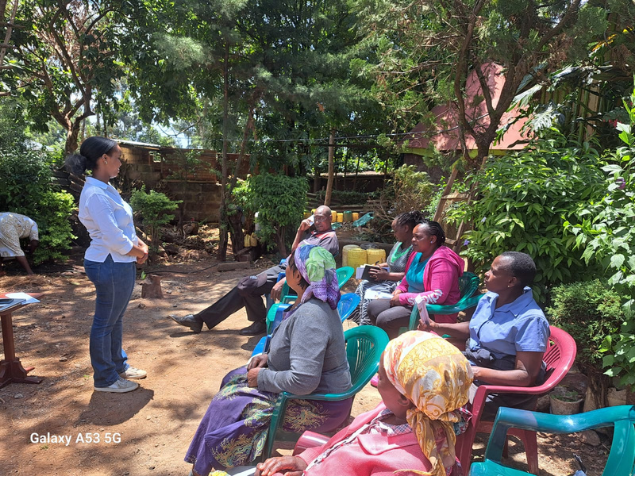

Our Story
Everything started with a simple question: what if the challenges facing agriculture weren't separate problems, but connected ones? In 2022, Kenya experienced one of its worst droughts in decades. Across farming communities, feed costs rose, productivity declined, and food security weakened — while tonnes of organic waste continued to be discarded every day.
"The real barrier wasn't the biology — it was knowing what was happening inside the colony before it was too late."
While studying Biology at the University of Nairobi, our founder, Abigail Ndekei, encountered Black Soldier Fly biotechnology: a nature-based process capable of converting organic waste into sustainable animal feed and organic fertiliser.
In 2024, Rethink Organic was founded to help smallholder farmers cut production costs, manage waste sustainably, and build climate-resilient livelihoods through circular agriculture — because agriculture shouldn't have to choose between productivity and sustainability.
Farmers experimenting with the practice often struggled to maintain the stable temperature and humidity BSF colonies need, with problems only visible after production had already dropped. That gap inspired a bigger vision: pairing biotechnology with digital monitoring to make sustainable farming easier to get right, not just easier to start.
